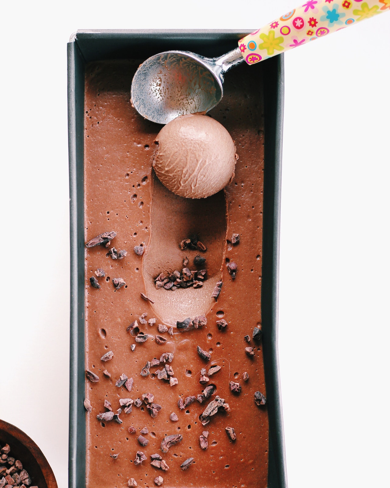

Vegan Snickers® Ice Cream

Description
This is really delicious. So refreshing! Easy to make and such a healthy version of what tastes like a malted milkshake
Ingredients:
- 2 cups ice cubes
- ½ cup soy milk
- 2 tablespoons crunchy peanut butter, or to taste
- 1 teaspoon carob powder, or more to taste
- 1 teaspoon agave nectar, or more to taste
Steps:
- Place ice cubes in a blender; add soy milk, peanut butter, carob powder, and agave nectar. Blend mixture until smooth and thicken.